00อาวุธใน 40K ทำงานอย่างไร
อาวุธในจักรวาล 40K แบ่งตามหลักการทำงานได้ไม่กี่กลุ่ม เมื่อเข้าใจกลุ่ม ก็จะเดาได้ว่าอาวุธใหม่ที่เจอเหมาะกับงานแบบไหน
| กลุ่ม | หลักการ | ตัวอย่าง | เหมาะกับ |
|---|---|---|---|
| Bolt | กระสุนจรวดจิ๋วที่ระเบิดในตัวเป้า | Bolter, Heavy Bolter | ทหารราบทั่วไป |
| Las | ลำแสงเลเซอร์จากแบตเตอรี่ | Lasgun, Lascannon | ทหารจำนวนมาก (ปืนเล็ก) / รถถัง (ปืนใหญ่) |
| Plasma | พลาสมาร้อนจากแกนฟิวชัน | Plasma Gun | เกราะหนัก (เสี่ยงระเบิด) |
| Melta | ลำความร้อนหลายหมื่นองศา | Meltagun, Multi-melta | รถถังระยะใกล้ |
| Flame | เชื้อเพลิง Promethium | Flamer, Heavy Flamer | ศัตรูในที่กำบังหรือรวมกลุ่ม |
| Power / Force | สนามพลังงานรอบใบมีด / พลังจิต | Power Sword, Power Fist, Force Weapon | เจาะเกราะในการรบประชิด / ปีศาจ |
หน้านี้เล่าอาวุธในเนื้อเรื่อง ส่วนค่าพลังบนโต๊ะ (Strength, AP, Damage) ดูได้ที่ ขั้นตอนการต่อสู้ และ datasheet ของแต่ละยูนิต เพราะค่าเหล่านี้เปลี่ยนตาม Edition
01ปืนของจักรวรรดิ
อาวุธยิงมาตรฐานที่ทหารมนุษย์และ Space Marine ใช้ ตั้งแต่ปืนพกไปจนถึงปืนต่อสู้รถถัง
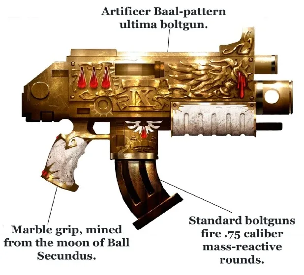
Bolter (Boltgun) ปืนสัญลักษณ์ของ Space Marine
Space Marine, Adepta Sororitas, Chaos Space Marine
ยิง "Bolt" กระสุนขนาด .75 ที่ระเบิดหลังเจาะเข้าเป้า ทำให้ศัตรูแหลกจากข้างใน ฝ่าย Chaos ยังใช้ Bolter รุ่นเก่าที่ได้มาก่อน Horus Heresy
- พลังทำลายสูงมากสำหรับปืนมือถือ
- หนักและแรงดีดสูง ทหารมนุษย์ธรรมดาใช้ได้ยาก
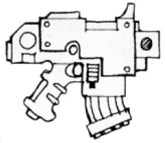
Bolt Pistol Bolter ขนาดพก
Space Marine, นายทหาร, Sororitas
Bolter ขนาดย่อสำหรับยิงมือเดียว มักใช้คู่กับอาวุธระยะประชิด รุ่นมาตรฐานของ Space Marine ปัจจุบันคือ Mark III
- ใช้คู่กับดาบหรือขวานได้
- บรรจุกระสุนได้น้อยกว่า
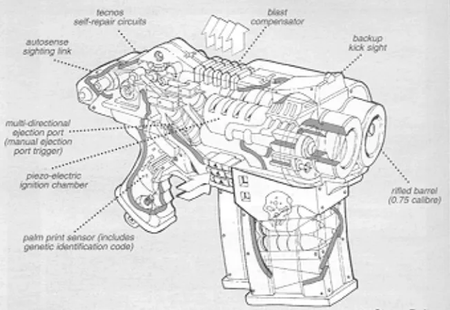
Storm Bolter Bolter ลำกล้องคู่
Terminator, Grey Knights, ติดบนรถถัง
Bolter สองลำกล้องที่หนักและดีดแรงกว่าเดิม เป็นอาวุธมาตรฐานของ Terminator ส่วน Grey Knights ติดไว้ที่ถุงมือ
- ยิงได้มากกว่า Bolter ปกติเท่าตัว
- กินกระสุนมาก
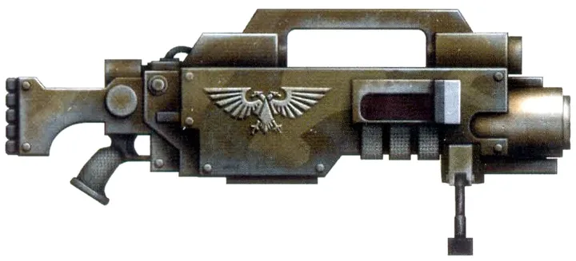
Heavy Bolter "Backbreaker"
Astra Militarum, Space Marine, ติดบนยาน
Bolter ขนาดใหญ่ ยิงเร็ว กระสุนใหญ่และแรงกว่า ใช้ยิงกดดันทหารราบ พบได้ทั่วไปในกองทัพมนุษย์
- ยิงเร็ว ต้นทุนต่ำ
- หนักมาก ต้องตั้งยิงหรือติดบนยาน
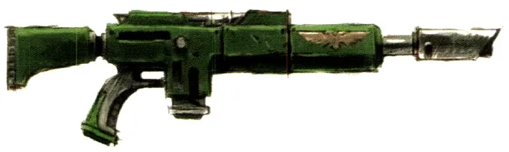
Lasgun ไฟฉายของทหาร
Astra Militarum, Skitarii
ปืนเลเซอร์ที่ใช้มากที่สุดในกาแล็กซี เป็นอาวุธประจำตัวของทหาร Astra Militarum ใช้แบตเตอรี่แทนกระสุน รุ่นแรงกว่าเรียกว่า Hellgun (Hot-shot Lasgun) ที่ Tempestus Scions และ Kasrkin ใช้
- ทนทาน ผลิตง่าย ไม่ต้องขนกระสุน
- อานุภาพต่ำกว่า Bolter มาก
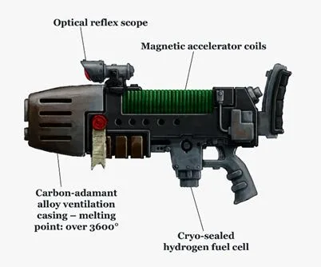
Plasma Gun ปืนดวงอาทิตย์จิ๋ว
Space Marine, Astra Militarum, Storm Trooper
เปลี่ยนไฮโดรเจนเป็นพลาสมาในแกนฟิวชันขนาดเล็ก แล้วยิงออกด้วยสนามแม่เหล็ก Plasma ของจักรวรรดิแรงกว่าของต่างดาว แต่ไม่เสถียรกว่า
- ทะลุเกราะหนักได้
- อาจร้อนเกินจนระเบิดใส่ผู้ยิง
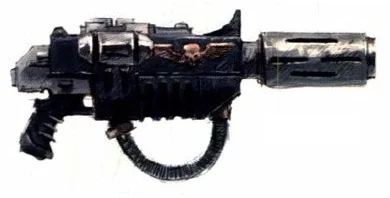
Meltagun "Fusion Gun" / "Cooker"
Space Marine, Sororitas, Astra Militarum
ยิงลำความร้อนหลายหมื่นองศาเซลเซียสที่หลอมได้แทบทุกอย่าง เวลายิงจะมีเสียงฟู่เพราะความร้อนต้มน้ำในอากาศจนเดือด
- อาวุธต่อต้านรถถังระยะใกล้ที่ดีที่สุด
- ระยะยิงสั้นมาก
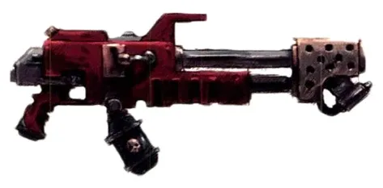
Flamer ปืนพ่นไฟ
Space Marine, Sororitas, Astra Militarum
พ่นเชื้อเพลิง Promethium ที่ติดไฟ ใช้ไล่ศัตรูออกจากที่กำบังและเผาทหารที่อยู่รวมกัน
- ไม่ต้องเล็ง ที่กำบังช่วยอะไรไม่ได้
- ระยะสั้น
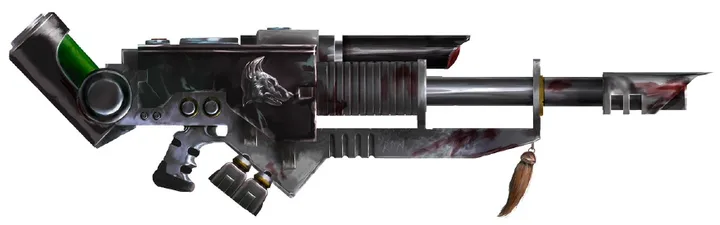
Lascannon ปืนเลเซอร์ต่อสู้รถถัง
Astra Militarum, Space Marine, ติดบนยาน
Las-weapon ขนาดใหญ่ที่สุดที่คนแบกได้ ยิงลำแสงเจาะเกราะรถถังได้แทบทุกคัน ใน Astra Militarum ต้องใช้ทีมสองคน
- ทะลุเกราะหนักจากระยะไกล
- ต้องชาร์จใหม่ทุกนัด ไม่เหมาะยิงทหารราบ
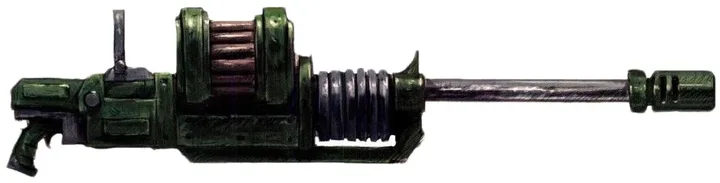
Autocannon ปืนใหญ่อัตโนมัติ
Astra Militarum, Leagues of Votann
ยิงกระสุนหัวแข็งความเร็วสูงเป็นชุด ใช้ยิงยานและป้อมจากระยะไกล เป็นแบบอาวุธเก่าแก่ที่มีมาตั้งแต่ยุค Terra โบราณ
- ยิงเร็วกว่าและร้อนเกินน้อยกว่า Lascannon
- กระสุนหนัก แรงดีดสูง
02อาวุธระยะประชิด
ใน 40K การรบประชิดสำคัญพอ ๆ กับการยิง และอาวุธพลังงานผ่าเกราะได้แทบทุกชนิด
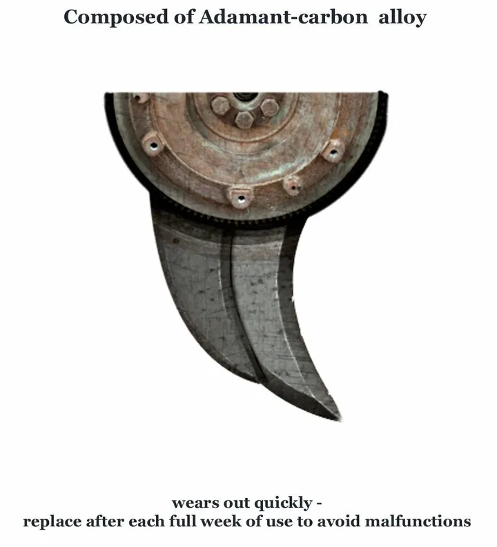
Chainsword ดาบเลื่อยยนต์
Space Marine, Astra Militarum, Chaos (มีรุ่นของ Ork และ Aeldari)
ดาบที่มีฟันเลื่อยหมุนรอบใบ ส่งเสียงหึ่งและกรีดร้องเมื่อบดเกราะ ฟันต้องเปลี่ยนบ่อย (ภาพ: แผนผังฟันของ Chainsword)
- ฉีกเนื้อได้รุนแรง ใช้มือเดียวได้
- ไม่ใช่อาวุธพลังงาน เจาะเกราะหนักได้ไม่ดี
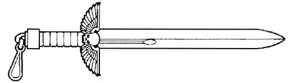
Power Sword ดาบพลังงาน
ทุกกองทัพของจักรวรรดิ และต่างดาวหลายเผ่า
ใบดาบ (มักเป็น adamantium) ถูกห่อด้วยสนามพลังงานที่ทำลายสสาร ผ่าทั้งเนื้อ กระดูก และเกราะได้
- สมดุลระหว่างความเร็วกับพลัง
- ต้องมีแหล่งพลังงาน ผลิตยาก
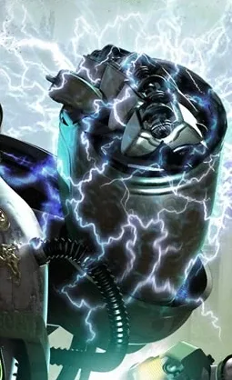
Power Fist ถุงมือพลังงาน
Space Marine, Chaos Space Marine
ถุงมือเกราะขนาดใหญ่ที่สร้างสนามพลังงานและเพิ่มแรงผู้ใช้หลายเท่า ทุบรถถังหรือฉีกเกราะ Terminator ได้
- ทำลายล้างสูงมาก
- ช้า ต้องยอมรับการโจมตีก่อนจะได้ตีกลับ
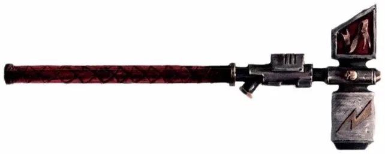
Thunder Hammer ค้อนสายฟ้า
Assault Terminator, Grey Knights, Inquisitor
ค้อนที่เก็บพลังงานไว้แล้วปลดออกเฉพาะตอนกระทบเป้า เกิดระเบิดพลังงานดังเหมือนฟ้าผ่า
- แรงกระแทกมหาศาล
- หนักและช้า
Force Weapon อาวุธพลังจิต
Psyker: Librarian, Grey Knights, Farseer
อาวุธที่มี Psi-convector อยู่ข้างใน ให้ Psyker ส่งพลัง Warp ผ่านอาวุธเข้าสู่ร่างเป้าหมาย ใช้ได้ผลเฉพาะในมือ Psyker และสังหารปีศาจได้ในแผลเดียว
- ฆ่าปีศาจและสัตว์ยักษ์ได้
- คนที่ไม่ใช่ Psyker ใช้เป็นอาวุธธรรมดา
03อาวุธโบราณจากยุค 30K
เทคโนโลยีจากยุคทองที่แทบสูญหาย จักรวรรดิผลิตไม่ได้แล้วหรือมีน้อยมาก
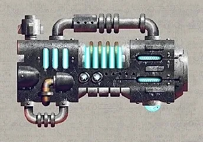
Volkite ปืนรังสีความร้อน
Legion ยุค 30K, Mechanicum
ยิงลำความร้อนที่ทำให้เป้า "ลุกไหม้ต่อเนื่อง" เป็นชั้น ๆ เจาะเกราะ Power Armour ได้ในนัดเดียว เผาเนื้อเป็นเถ้าในพริบตา เป็นเทคโนโลยีก่อนยุคจักรวรรดิ
- อานุภาพสูงกว่าอาวุธขนาดเดียวกัน
- แทบไม่มีใครผลิตได้แล้วในยุค 40K
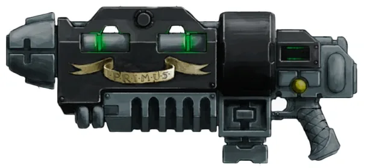
Grav Weapon ปืนแรงโน้มถ่วง
Space Marine, Collegia Titanica, Leagues of Votann
ใช้มวลของเป้าหมายเองบดขยี้มัน ยิ่งเกราะหนักยิ่งโดนหนัก Terminator จะถูกเกราะของตัวเองทับจนแหลก Chapter ถือว่าการได้ถืออาวุธนี้เป็นเกียรติ
- ร้ายแรงที่สุดต่อเป้าเกราะหนัก
- หายากมาก
04อาวุธของต่างดาว
แต่ละเผ่ามีแนวคิดการรบต่างกัน อาวุธจึงสะท้อนตัวตนของเผ่านั้น
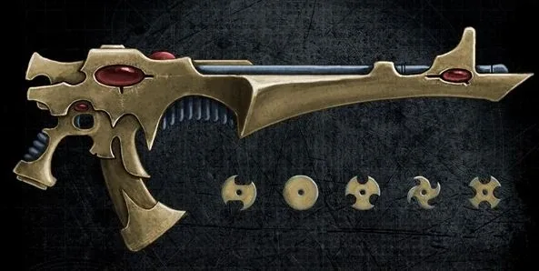
Shuriken Catapult ปืนดาวกระจาย
Aeldari (Guardian, Dire Avenger)
ยิงจานคมบางระดับโมเลกุลจำนวนมากในระยะใกล้ เป็นอาวุธพื้นฐานของ Craftworld Aeldari Dire Avenger ใช้รุ่น Avenger
- ยิงถี่ เฉือนเกราะเบาได้ดี
- ระยะสั้น
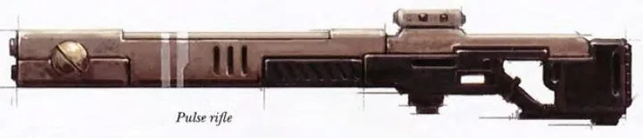
Pulse Rifle ปืนพัลส์
T'au Fire Warrior
ใช้สนามเหนี่ยวนำยิงพลาสมาเป็นชุดสั้น ๆ ระยะไกลและแรงกว่าอาวุธทหารราบมาตรฐานของทุกเผ่าที่ T'au เคยเจอ พัฒนาขึ้นระหว่างสงครามกับ Ork (606–792.M38)
- ระยะไกลที่สุดในหมู่ปืนทหารราบ
- T'au ไม่ถนัดการรบประชิด
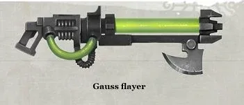
Gauss Flayer ปืนสลายโมเลกุล
Necron Warrior
ยิงลำแสงสีเขียวคล้ายสายฟ้าที่ลอกเป้าหมายออกทีละชั้นโมเลกุล เชื่อกันว่าเจ็บปวดอย่างยิ่ง บางกระบอกมีดาบปลายปืนรูปขวาน
- ทำลายได้ทั้งเนื้อ เกราะ และกระดูก
- —
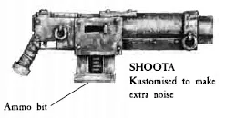
Shoota ปืนกล Ork
Ork Boyz
ปืนกลที่ Ork เลือกเพราะ เสียงดัง มากกว่าความแม่นยำ ไม่มีแบบมาตรฐาน ทุกกระบอกประกอบเองจากเศษเหล็ก คำขวัญของ Ork คือ "moar dakka!" (ยิงให้มากกว่านี้!)
- ยิงรัว ปริมาณชนะคุณภาพ
- ความแม่นยำต่ำ
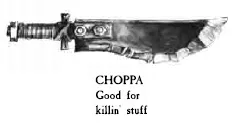
Choppa ใบมีดของ Ork
Ork ทุกตัว
ชื่อเรียกรวมของอาวุธประชิดของ Ork ส่วนใหญ่คือเศษเหล็กลับคม รุ่นใหญ่คือ Big Choppa ขวานสองมือที่บางอันมีฟันเลื่อย
- Ork แรงเยอะ ฟาดอะไรก็พัง
- หยาบและไม่ประณีต
05ยานรบของจักรวรรดิ
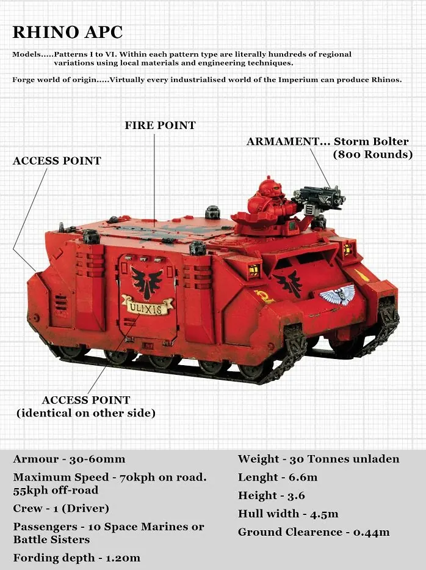
Rhino ยานลำเลียงพล (APC)
Space Marine และแทบทุกฝ่าย
ยานลำเลียงแบบ Mars Pattern ที่ใช้มาตั้งแต่ Great Crusade ทนทุกสภาพแวดล้อม ฝ่ายทรยศก็นำติดตัวหนีไปหลัง Heresy
หน้าที่: ขนส่ง Space Marine 1 หมู่

Predator รถถังหลักของ Space Marine
Space Marine, Chaos
ต่อยอดจากตัวถัง Rhino รุ่นที่พบบ่อยที่สุดคือ Destructor ติดปืนใหญ่อัตโนมัติ (Predator Cannon) สร้างจากแบบ STC ยุคโบราณ
หน้าที่: ยิงทหารราบและยานเบา

Land Raider "กำปั้นเกราะของ Space Marine"
Space Marine, Chaos, Inquisition
รถถังและยานลำเลียงที่ทนทานที่สุดคันหนึ่งในกาแล็กซี เก่าแก่กว่าตัวจักรวรรดิ ติด Lascannon คู่สองชุดและ Heavy Bolter คู่ เกราะ ceramite ผสม adamantium
หน้าที่: บุกทะลวงพร้อมทหารชั้นยอด
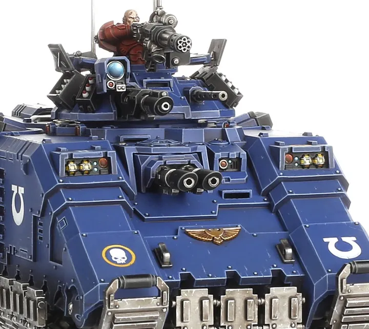
Repulsor รถถังลอยตัวของ Primaris
Primaris Space Marine
รถถังหนักต้านแรงโน้มถ่วงคันแรกของจักรวรรดินับตั้งแต่ Horus Heresy สร้างที่ Mars ภายใต้ Belisarius Cawl
หน้าที่: ลำเลียงและยิงสนับสนุน
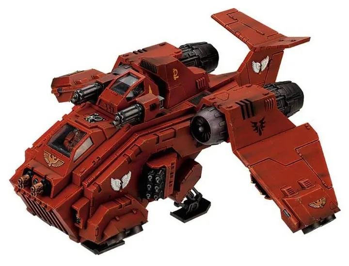
Stormraven ยานรบอากาศอเนกประสงค์
Space Marine
เป็นทั้งยานลำเลียง ยานลงจอดจากวงโคจร และเครื่องบินโจมตี เล็กและคล่องกว่า Thunderhawk บรรทุก Space Marine ได้สูงสุด 12 นาย
หน้าที่: ส่งทหารถึงที่หมายเร็ว

Dreadnought เครื่องจักรเดินได้
Space Marine
ร่างจักรกลที่บรรจุนักรบผู้บาดเจ็บปางตาย ให้รบต่อได้อีกหลายศตวรรษ รุ่นที่พบบ่อยที่สุดคือ Castraferrum ดูทุกรุ่นที่ Dreadnought ของทุกฝ่าย
หน้าที่: สนับสนุนหนักของหมู่ทหาร

Leman Russ รถถังหลักของ Astra Militarum
Astra Militarum
รถถังที่ประจำการมากที่สุดในจักรวรรดิ ตั้งชื่อตาม Primarch ของ Space Wolves ใช้เชื้อเพลิงเหลวแทบทุกชนิด เกราะหน้าหนาแต่ข้างและหลังบาง
หน้าที่: แนวหน้าของกองรถถัง
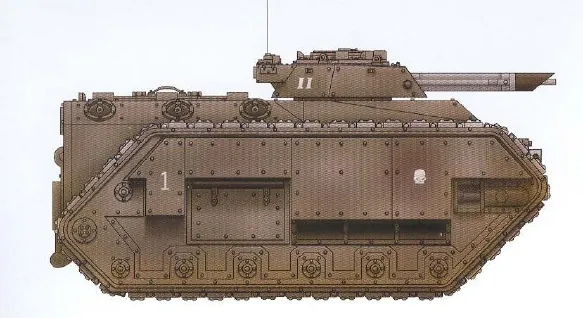
Chimera ยานลำเลียงของ Astra Militarum
Astra Militarum
บรรทุกทหารได้ 12 นาย มีช่องยิง lasgun ด้านข้าง ลุยน้ำได้ ตัวถังนี้ยังเป็นฐานของยานอื่นอีกมาก เช่น ปืนใหญ่ Basilisk
หน้าที่: ลำเลียงทหารราบ
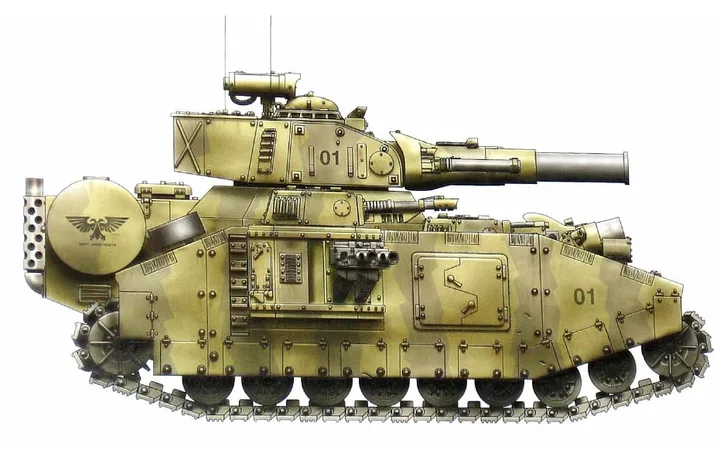
Baneblade รถถังยักษ์
Astra Militarum
รถถังขนาดใหญ่พิเศษที่เก่าแก่ที่สุดแบบหนึ่ง ต้องใช้ลูกเรือ 10 คน เป็นเหมือนป้อมเคลื่อนที่ และมักใช้เป็นรถบัญชาการ
หน้าที่: ศูนย์กลางของการบุกหรือแนวป้องกัน
06ยานรบของ Chaos และต่างดาว
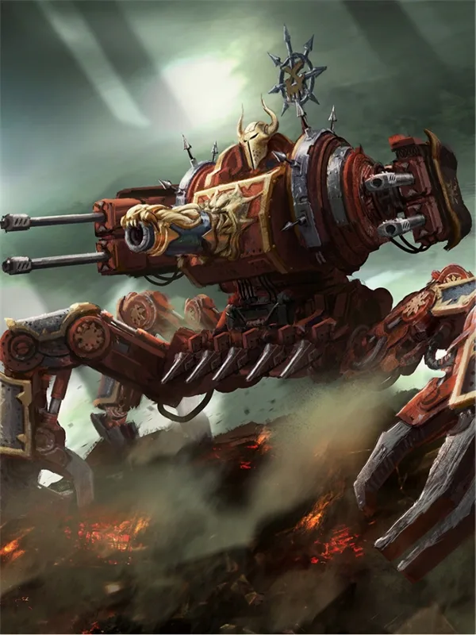
Defiler Daemon Engine หกขา
Chaos Space Marine
เครื่องจักรที่มีปีศาจสิงอยู่ ใหญ่กว่า Daemon Engine ทั่วไปเท่าตัว สร้างขึ้นตามคำสั่งของ Abaddon หลังยุค Heresy ติดปืนใหญ่และก้ามยักษ์
หน้าที่: ทำลายทั้งทหารและรถถัง
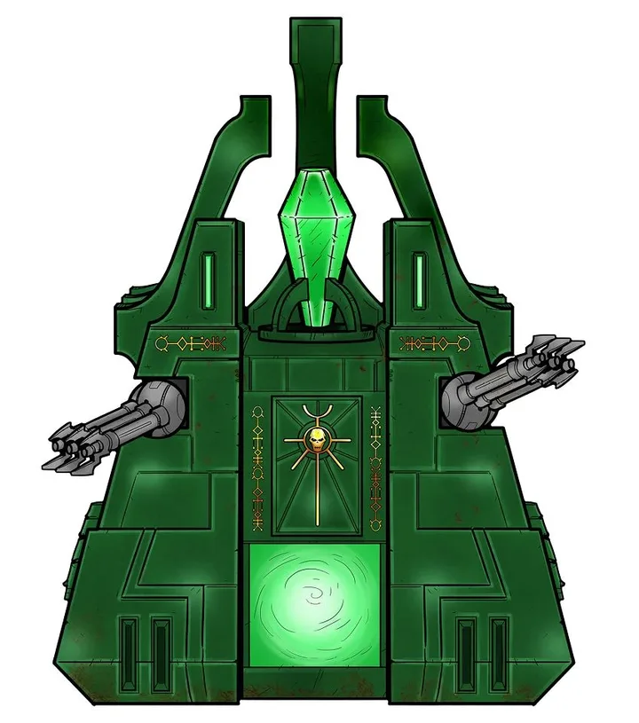
Monolith ป้อมลอยได้ของ Necron
Necron
ป้อมเคลื่อนที่ลอยด้วยเครื่องยนต์ต้านแรงโน้มถ่วง แกนคริสตัลยิงสายฟ้า Gauss และ Particle Whip ใช้เป็นทั้งยานบุกและยานลำเลียง
หน้าที่: สัญลักษณ์พลังอันไม่ตายของ Necron
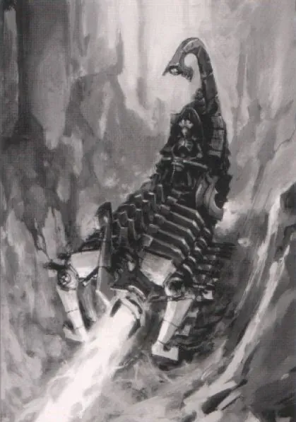
Doomsday Ark ปืนใหญ่ลอยได้
Necron
แท่นลอยสำหรับ Doomsday Cannon หนึ่งในอาวุธที่แรงที่สุดของ Necron ยิงชุดเดียวทำลายบังเกอร์ได้
หน้าที่: ยิงถล่มระยะไกล
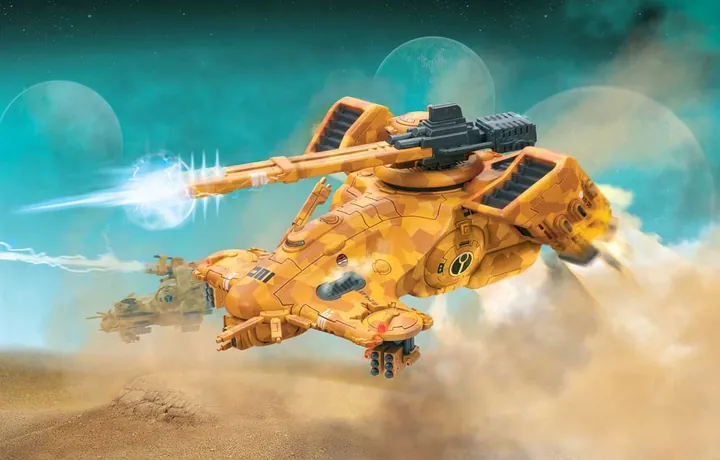
Hammerhead รถถังลอยตัวของ T'au
T'au Empire
รถถังหลักของ T'au ติด Railgun ที่ศัตรูเกรงกลัว จักรวรรดิพบครั้งแรกในสงครามอ่าว Damocles
หน้าที่: ล่ารถถังศัตรู

XV8 Crisis Battlesuit ชุดรบหลักของ T'au
T'au Fire Caste
ชุดรบสูงเป็นสองเท่าของทหาร Fire Warrior สมดุลทั้งอาวุธ เกราะ และความคล่องตัว ทำจากโลหะผสมนาโนคริสตัลที่มีแต่ T'au ผลิตได้
หน้าที่: ปรับอาวุธได้หลายแบบ
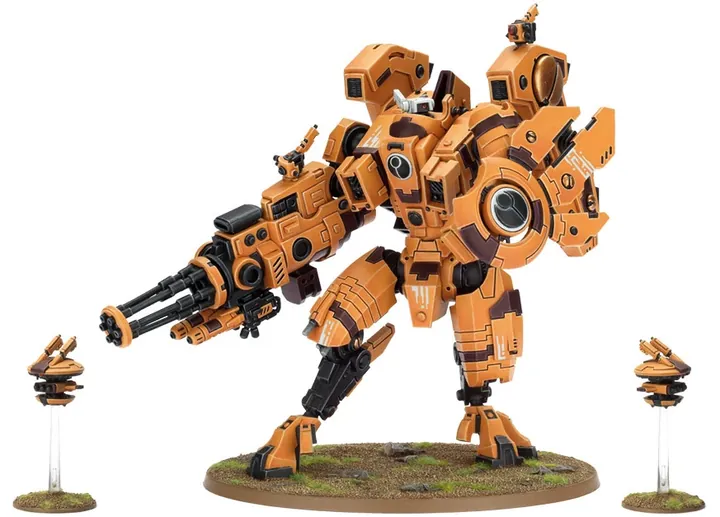
XV104 Riptide ชุดรบขนาดใหญ่
T'au (นักบินระดับ Shas'vre)
สูงเป็นสองเท่าของ Crisis มีเตาปฏิกรณ์ Nova ที่ดึงพลังเพิ่มได้ชั่วคราว ติดโล่และปืนหนัก
หน้าที่: สู้กับศัตรูที่อันตรายที่สุด
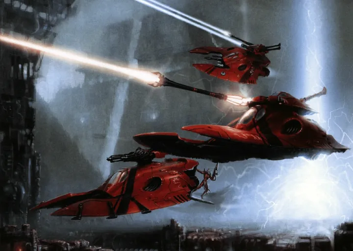
Wave Serpent ยานลำเลียงของ Aeldari
Craftworld Aeldari
ยานลอยตัวบรรทุกนักรบได้ 10 นาย สร้างคลื่นพลังงานด้านหน้าไว้ป้องกันการยิง และปล่อยเป็นอาวุธได้ในยามคับขัน
หน้าที่: ลำเลียงเร็ว
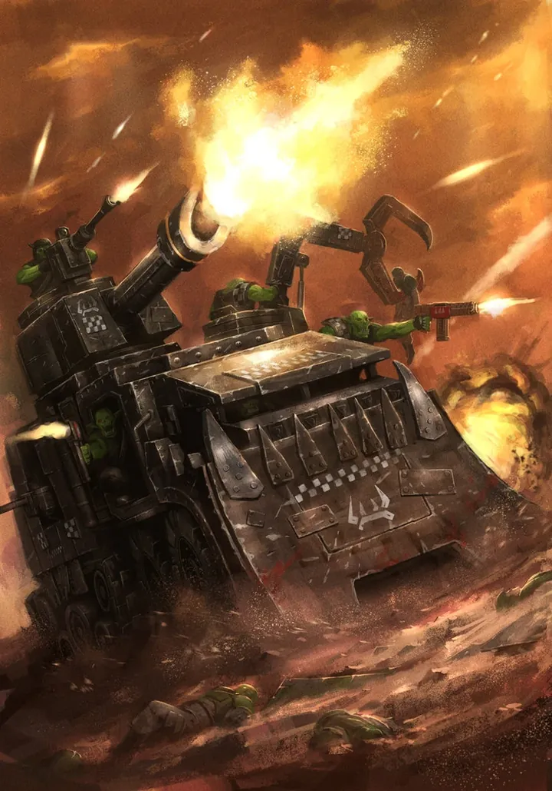
Battlewagon รถถังของ Ork
Ork
ชื่อเรียกรวมของรถถังและรถลำเลียงหนักของ Ork ล้อ สายพาน หรือลูกกลิ้งหนาม บรรทุก Boyz ทั้งข้างในและเกาะข้างนอก
หน้าที่: พา Boyz พุ่งเข้าชน
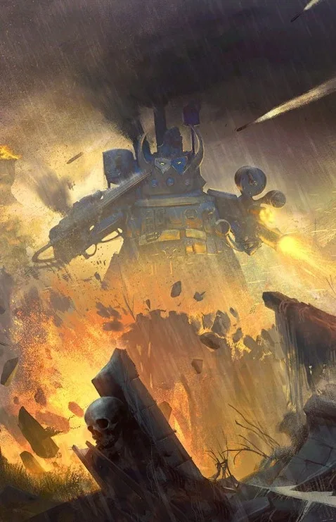
Stompa Gargant ขนาดเล็ก
Ork
หุ่นยักษ์เท่า Titan รุ่นเล็กของจักรวรรดิ สร้างเป็นรูปปั้นของเทพ Gork และ Mork ทุกตัวไม่เหมือนกัน
หน้าที่: ป้อมเดินได้ของ Ork

Carnifex รถถังมีชีวิต
Tyranid
สัตว์ยักษ์ที่เป็นเหมือนรถถังหลักของ Tyranid เปลือกหนา ใช้บุกป้อมและพุ่งชนแนวรถถัง มีหลายสายพันธุ์เพราะ Tyranid วิวัฒนาการตลอดเวลา
หน้าที่: บุกทะลวงแนวหน้า
07เครื่องจักรสงครามยักษ์: Knight และ Titan
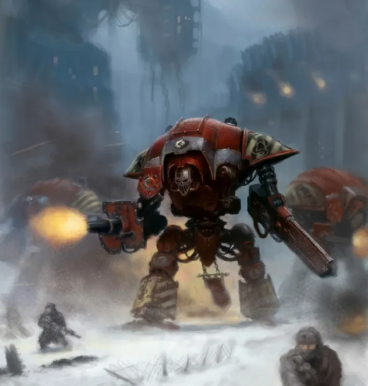
Imperial Knight
หุ่นรบสูง 9–12 เมตร ขับโดยนักรบคนเดียวจากตระกูลขุนนางศักดินา ป้องกันด้วย Ion Shield และติดอาวุธหนัก แม้จะใหญ่ แต่ก็ยังเล็กกว่า Titan รุ่นเล็กที่สุด (Warhound) — ดู Imperial Knights

Titan
เครื่องจักรสงครามขนาดเท่าตึกของ Collegia Titanica ตั้งแต่ Warhound, Reaver, Warlord ไปจนถึง Imperator ที่ใหญ่เหมือนมหาวิหารเดินได้ — ดู Titan Legions
เรียบเรียงจากบทความใน Warhammer 40k Wiki ของอาวุธและยานแต่ละชนิด ภาพเป็นลิขสิทธิ์ของ Games Workshop ดูรายการที่ เครดิตภาพ